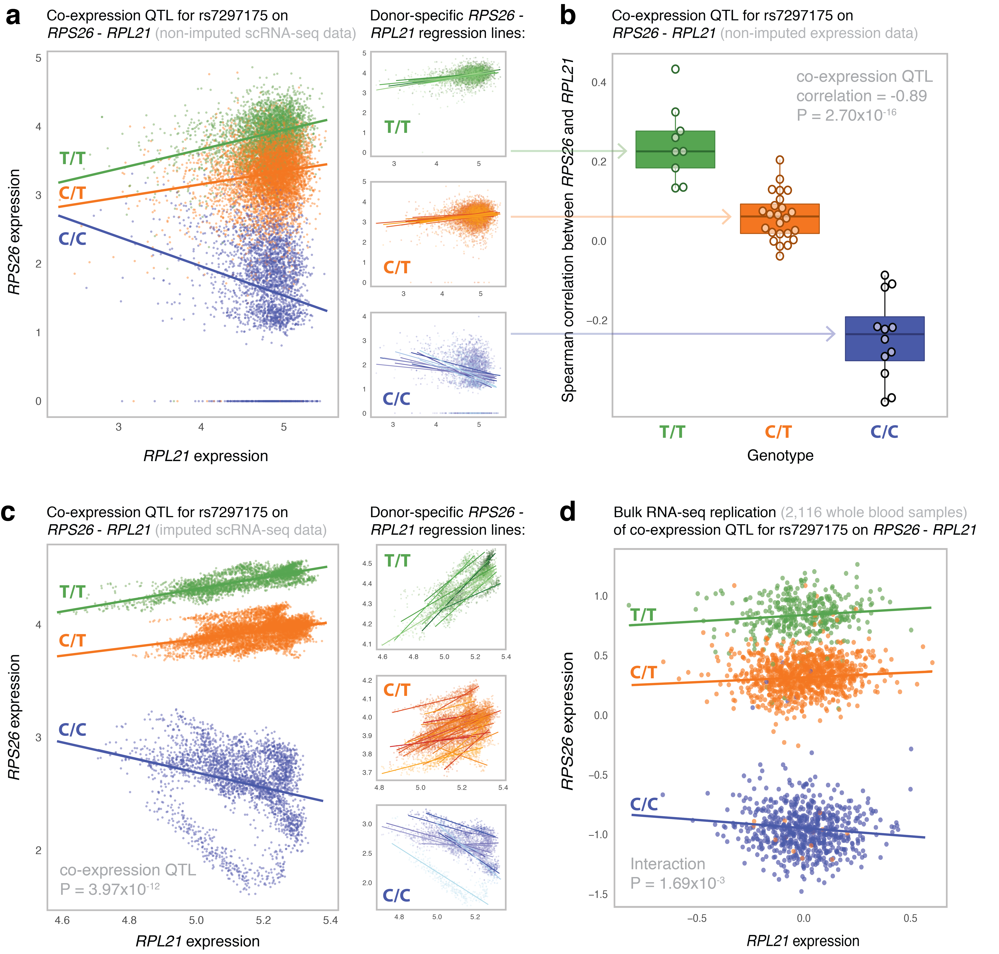

Figure 2 - Most significant co-expression QTL in the CD4+ T cells.
(a) The non-imputed expression of RPS26 and RPL21 of all individual CD4+ T cells colored by genotype (left panel)
and stratified per SNP rs7297175 genotype (right panels). Genotype- and donor-specific regression lines are shown in the left and right panel,
respectively. Each data point represents a single cell. (b) The Spearman’s rank correlation coefficient (r) between RPS26 and RPL21 expression
stratified by SNP rs7297175 genotype in the CD4+ T cells per donor. Each data point represents a single donor. Box plots show the median, the
first and third quartiles, and 1.5 times the interquartile range. (c) The imputed expression of RPS26 and RPL21 of all individual CD4+ T cells
colored by genotype (left panel) and stratified per SNP rs7297175 genotype (right panels). Genotype- and donor-specific regression lines are
shown in the left and right panel, respectively. Each data point represents a single cell. (d) The expression of RPS26 and RPL21 of whole blood
bulk RNA-seq samples colored by SNP rs7297175 genotype. Genotype-specific regression lines are shown. Each data point represents a single bulk
RNA-seq sample.